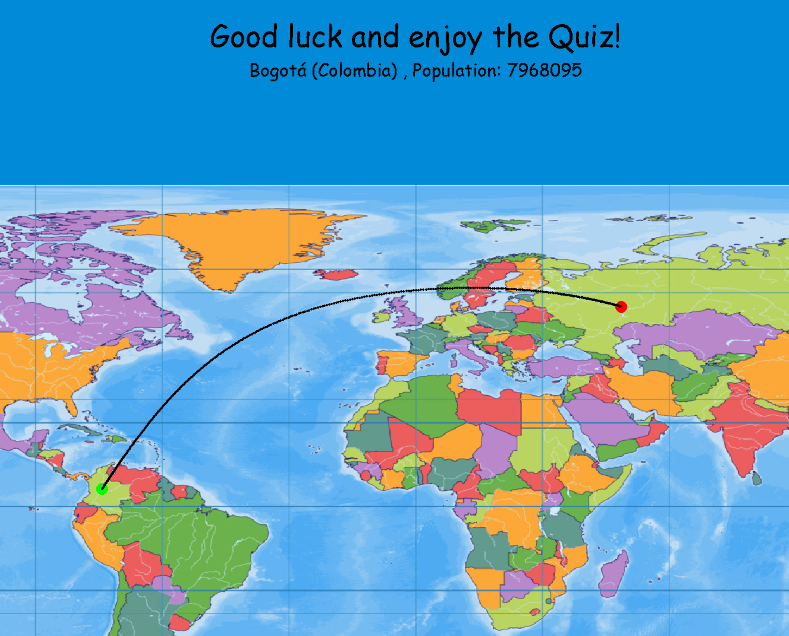

Quiz
So you think you are good with geography? Test your skills in this quiz that challenges your knowledge and intuition about cities and languages all over the world.
The rules are simple: You are shown 10 city names, and its up to you to guess where these cities may be located on the world map. The closer you are to the correct answer, the better! And don't worry that the game will be too easy or too hard: you can choose between three levels of difficulty.
If you are not convinced yet, this game does also have a fun connection to physics: To determine the precise distance between two points on the world map, the game displays the shortest geodesic between your guess and the correct answer and calculates the length of that geodesic.
You can try this game on your own device by downloading the zip below and running .exe file on your device.
Download via DropboxGood luck and have fun! I'm excited to hear about your personal highscores.